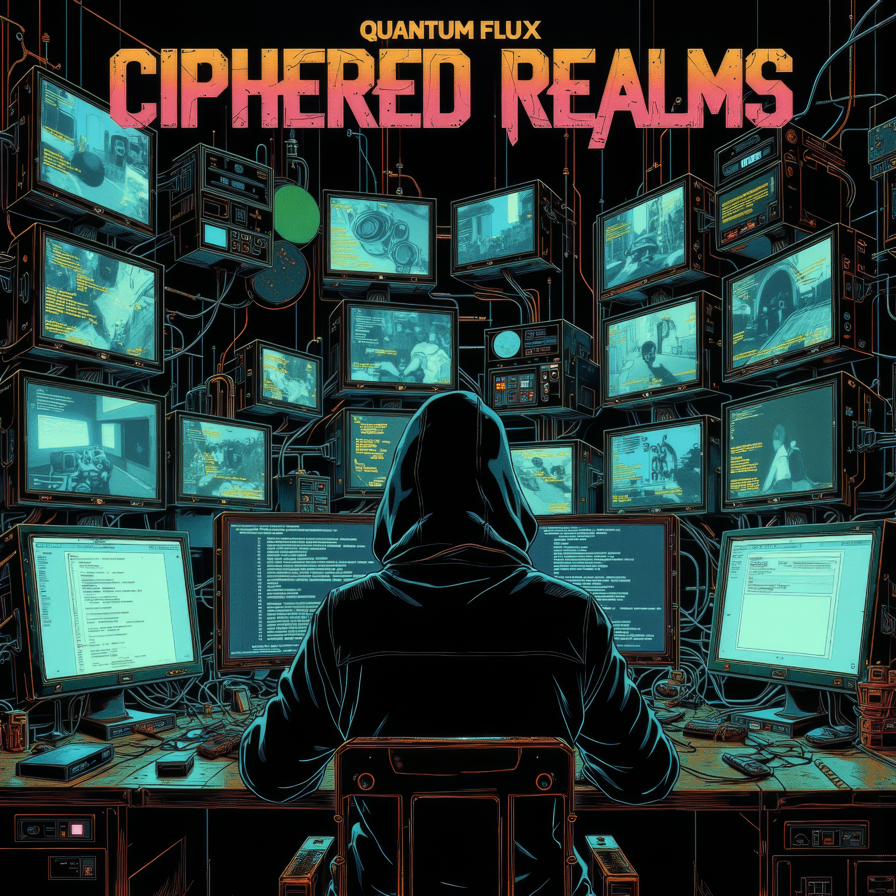
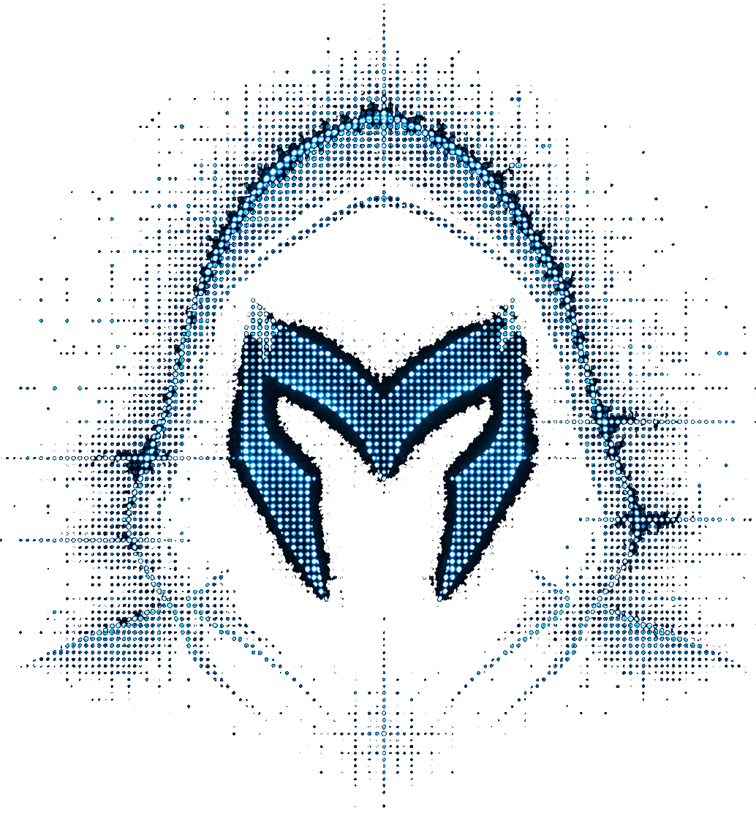

Inspired By Hacker Culture
The mindset, the tools, the thrill of the chase.
Exploring Hidden Worlds Through Sound
The soundtrack for builders, explorers, hackers, and digital dreamers. High energy. No limits. Infinite possibility.

The Debut Album
A journey through encrypted worlds, digital shadows, and the endless frontier of code.
Why Quantum Flux Exists
Quantum Flux is the alter ego. The Phantom on a digital quest. Exploring hidden systems. Solving puzzles. Outsmarting barriers. Not to cause harm, but to understand, to learn, to prove.
Every lock has a story.
Every system has a secret.
Let’s find out.

The mindset, the tools, the thrill of the chase.
Fast pace. No words. Just flow, drums, and synth.
Human imagination plus AI technology equals unlimited possibility.
Through sound, we go where the curious belong.
The Phantom’s Tools
My utility belt. My digital arsenal. The tools help, but the mind wins.
The Alter Ego
A digital explorer.
Part hacker.
Part storyteller.
Following curiosity into hidden worlds,
encrypted paths,
and unexplored possibilities.
I don’t break systems. I explore them.
I don’t seek power. I seek knowledge.
I don’t follow paths. I find them.
— The Phantom